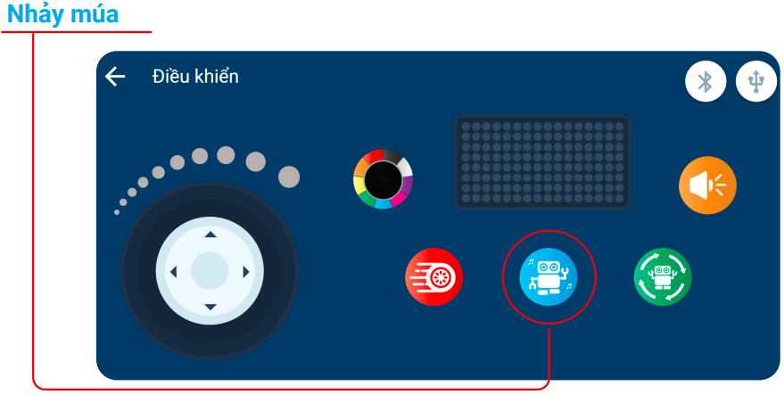
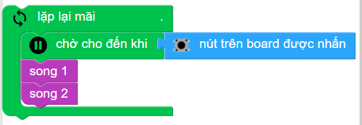

6. Bài 2: Nhảy múa cùng xBot
Mục tiêu
Làm quen với loa tích hợp có trên xBot, biết cách để kết hợp các khối lệnh phát nhạc và khối lệnh đổi màu đèn LED RGB để tạo các hiệu ứng vui nhộn.
6.1 Giới thiệu về âm thanh và loa trên xBot
Âm thanh là gì
{kind=link}
Âm thanh là do vật thể rung động, phát ra tiếng và lan truyền đi trong môi trường dưới dạng sóng.
Tính chất âm thanh
{kind=link}
Âm thanh lan truyền được trong các chất khí, lỏng và rắn, nhưng không không lan truyền được trong khảong chân không.
Vận tốc lan truyền của âm thanh phụ thuộc vào môi trường truyền âm.
Ví dụ: trong không khí là 340m/s, trong nước là 1.480m/s, trong sắt là 5.000m/s.
{kind=link}
Một số chất truyền âm rất kém, thường có tính mềm, xốp như: bông, dạ, cỏ khô… gọi là chất hút âm. Các chất này được dùng lót tường các rạp hát, các phòng cách âm,… để hút ẩm, giảm tiếng vang.
Thính giác của người có thể nghe được âm thanh trong dải tần số từ khảong 20Hz đến khoảng 20.000Hz.
Kiến thức thêm
Tai người có thể nghe được âm thanh là nhờ màng nhĩ. Màng nhĩ tiếp nhận âm thanh và dao động để dẫn truyền âm thanh đến tai trong, sau đó truyền lên não bộ.
{kind=link}
Loa (Buzzer) có trên xBot
Loa có 2 loại: chủ động và bị động. Trên mạch điều khiển của xBot có sẵn một loa thuộc loại bị động.
{kind=link}
{kind=link}
6.2 Các khối lệnh phát âm thanh
{kind=link}
Nốt nhạc: Các nốt nhạc được đánh tên theo ký tự chuẩn (như bảng minh họa). Bạn có thể gõ trực tiếp tên nốt nhạc vào nếu trong tùy chọn không có, ví dụ: G5.
Độ dài: Độ ngân dài của nốt nhạc cần phát.
{kind=link}
Loa sẽ ngừng phát sau độ dài của nốt nhạc. Sau đây là các giá trị độ dài nốt nhạc được sử dụng trong âm nhạc:
{kind=link}
Trong đó
{kind=link}
6.3 Phát một điệu nhạc
Chúng ta sẽ viết một số chương trình để thử âm thanh của loa trên xBot.
Chương trình 1: Đồ Rê Mí
{kind=link}
Chương trình 2: Phát nhạc Rê Mi Đô Đô Sol
{kind=link}
Nếu muốn viết một đoạn nhạc dài hơn và có sự lặp lại của nhiều giai điệu thì chương trình sẽ rất dài. Khi đó bạn cần sử dụng khối lệnh lặp lại mà bạn đã quen thuộc ở các phần trước.
Ví dụ: Chúng ta sẽ viết chương trình phát giai điệu sau:
{kind=link}
Trong giai điệu trên, bạn thấy có 2 đoạn nhạc được lặp lại 2 lần. Khi đó chương trình sẽ như sau:
{kind=link}
Sử dụng khối lệnh lặp lại sẽ giúp cho chương trình của chúng ta ngắn gọn và dễ đọc hơn nhiều đúng không nào?
6.4 Sử dụng hàm để rút ngắn chương trình
Với những chương trình dài có nhiều khối lệnh, chúng ta sẽ sử dụng Hàm để rút gọn nhữung chương trình đó.
Hàm giống như việc bạn tạo thêm một loại khối lệnh mới để sử dụng, và khối lệnh này bao gồm các khối lệnh con bên trong.
Cách tạo hàm:
{kind=link}
Tạo chương trình với hàm:
Kéo các khối lệnh mà bạn muốn đóng gói vào khối lệnh thủ tục Song1 như hình dưới:
{kind=link}
Hoàn thành việc tạo ra một hàm mới (là một loại khối lệnh mới), trong đó bao gồm nhiều khối lệnh con.
{kind=link}
Làm tương tự cho giai điệu còn lại và đặt tên hàm là Song2.
Chương trình cuối sẽ như sau:
{kind=link}
Khi chạy thử chương trình, bạn sẽ thấy kết quả tương tự phần 4-3
Nếu muốn phát một giai điệuở đoạn khác, bạn hãy gọi hàm đã được định nghĩa:
{kind=link}
{kind=link}
Có thể thấy, nhờ sử dụng hàm mà chương trình được rút ngắn và dễ nhìn hơn rất nhiều.
Ngắt giữa các giai điệu
Trong chương trình trên, có một điều khá khó chịu là thiếu thời gian nghỉ giữa các giai điệu, khiến bài hát được phát liên tục. Liệu có cách nào để chèn một nhịp nghỉ giữa các giai điệu của bài nhạc không?
Để giải quyết vấn đề này, bạn cần sử dụng khối lệnh chờ. Hãy thử chèn thêm khối lệnh chờ 0.25 giây sau mỗi giai điệu nhé:
{kind=link}
6.5 Nhảy múa cùng xBot
Và bây giờ, chúng ta hãy thử cùng lập trình cho xBot nhảy múa một cách vui nhộn xem nào. Bạn có thể tham khảo một kiểu nhảy múa mà xBot có sẵn, bằng cách nhấn vào nút Nhảy múa trong giao diện điều khiển của xBot.
{kind=link}
Chúng ta hãy thử viết một chương trình để xBot nhảy múa giống như vậy:
xBot vừa di chuyển vừa phát bài nhạc “Wheels On The Bus”, kết hợp đổi màu đèn LED RGB. Cách di chuyển của xBot sẽ như sau:
Di chuyển tới 0,5 giây, sau đó di chuyển lùi 0,5 giây (lặp lại 4 lần)
Lặp lại hành động rẽ trái, rẽ phải 4 lần:
Rẽ trái trong 0,5 giây
Rẽ phải trong 1 giây (để xBot quay sang phải so với hướng ban đầu)
Rẽ trái trong 0,5 giây (để quay lại hướng ban đầu)
Di chuyển tới lui kết hợp rẽ trái, phải (thời gian của từng động tác sẽ như trên, và được lặp lại 4 lần)
Bước 1: Cho xBot phát bài nhạc: Wheels on the Bus
{kind=link}
Bước 2: Cho xBot tiến tới 0.5 giây và lùi lại 0.5 giây với tốc độ 50. Sử dụng khối lặp lại 4 lần
{kind=link}
Bước 3: Thêm các khối đổi màu đen dưới mỗi khối di chuyển, màu đèn có thể đổi tùy ý bạn:
{kind=link}
Bước 4: Tương tự, bạn lập trình cho xBot lần lượt: rẽ trái 0,5 giây, rẽ phải 1 giây, rẽ trái 0,5 giây, đồng thời đổi màu đèn. Lặp lại 4 lần
{kind=link}

Chương trình cuối cùng sẽ như sau:
{kind=link}
Bạn hãy chạy chương trình và quan sát xBot nhảy múa nhé.
6.6 Bài tập mở rộng
Bài 1:
Bạn hãy thử viết chương trình phát ra bài hát “Little Star” liên tục mỗi khi nhấn nút trên xBot:
Đoạn 1: Đồ Đồ Sol Sol La La Sol Chờ 1 giây
Đoạn 2: Fa Fa Mi Mi Rê Rê Đồ Chờ 1 giây
Gợi ý: Cấu trúc chương trình sẽ như sau:
{kind=link}
Bài 2:
Bạn hãy thử kết hợp âm nhạc và làm thay đổi màu sắc đèn LED để xBot trình diễn một hiệu ứng thú vị.
Chương trình tham khảo:
{kind=link}
Bài 3: Bạn hãy thử cho xBot hú còi và bật đèn giống như xe cảnh sát xem bào…
Chương trình tham khảo.
{kind=link}
Bạn có thể nhấn vào nút Dừng chương trình để ngưng hiệu ứng hú còi nhé.
6.7 Câu hỏi ôn tập
Có bao nhiêu nốt nhạc cơ bản? Kể tên.
Chỉ ra khối lệnh để lập trình xBot phát nhạc.
Hàm có tác dụng gì? Liệt kê các thao tác để tạo một hàm.